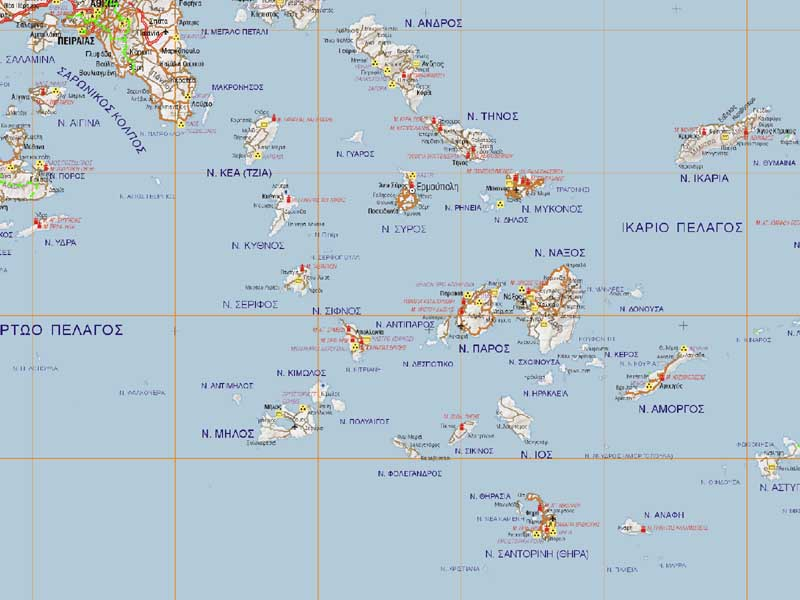

Κυκλαδίτικη κουζίνα

Αρχική|
Κυκλαδίτικη κουζίνα |
Μακεδονική κουζίνα |
Eπτανησιακη κουζινα |
Θρακική κουζίνα |
Ηπειρωτική κουζίνα|
Κρητική κουζίνα|
Η κουζίνα της Θεσσαλίας|
Παραδοσιακά φαγητά των Κυκλάδων
- Ντοματοκεφτέδες Σαντορίνης
- Φρουτάλια Άνδρου με πατάτες και κολοκύθια
- Σιφναίικη ρεβιθάδα
- Κυκλαδίτικη καρπουζόπιτα
- Μελιτζάνες με Κοκκινιστό Μοσχάρι (Ναξιώτικος Καλόγερος)
Συνταγές
Καρπουζόπιτα
Ντοματοκεφτέδες Σαντορίνης